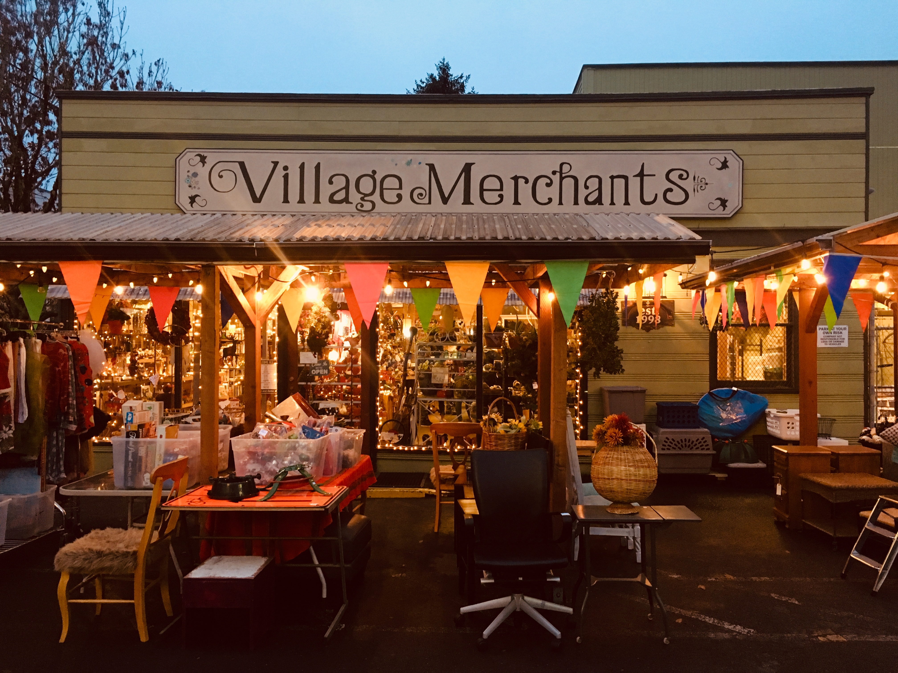

20 years of recycling in Portland!
A Big thank you to the Village Community for supporting us for all of these years! We’ve managed to create quite a fun way to keep our gently used treasures out of the landfill and into the arms of new owners. I feel proud that every day feels like Earth Day at Village.